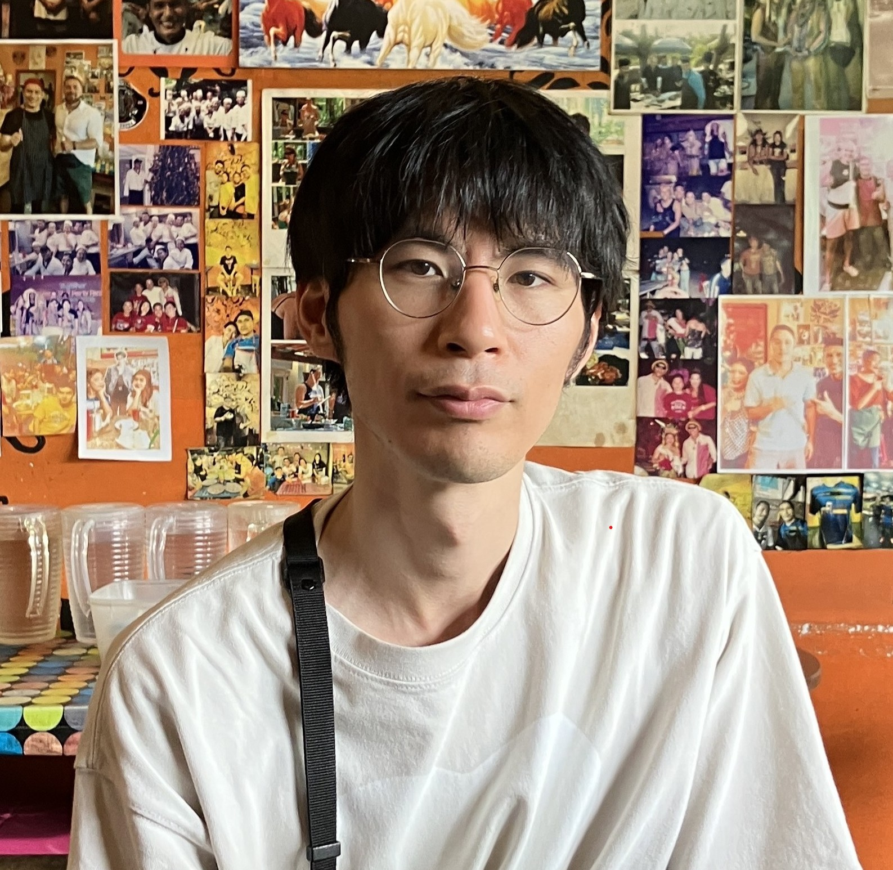
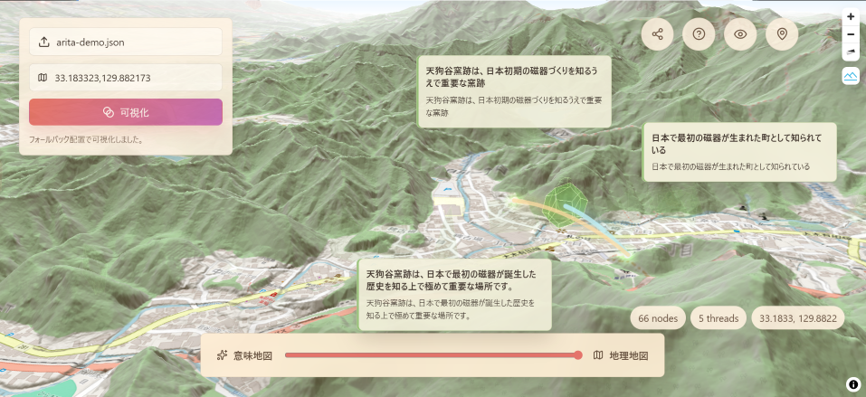
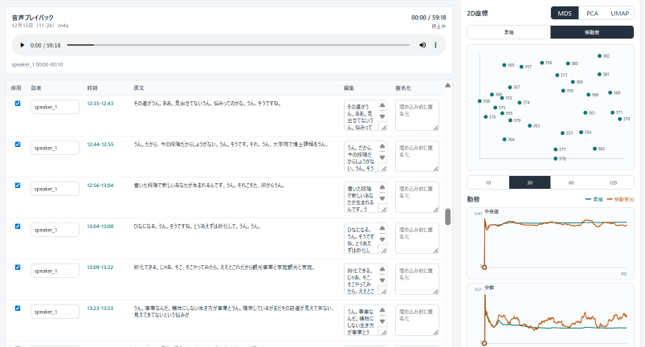
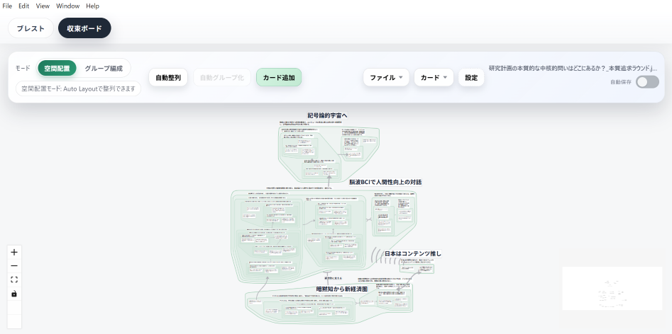
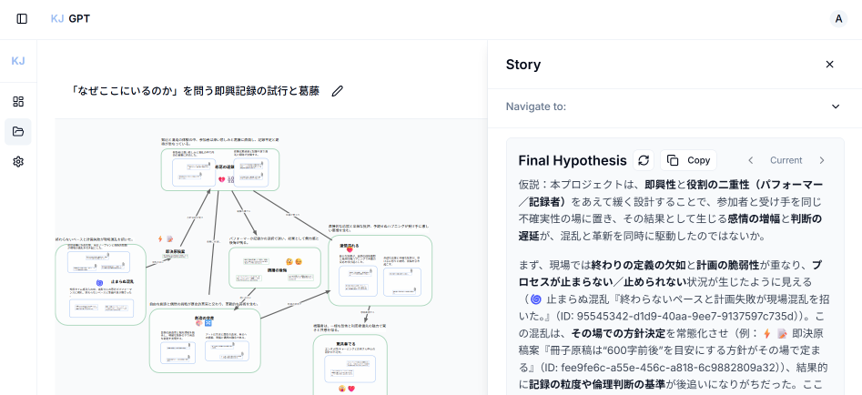
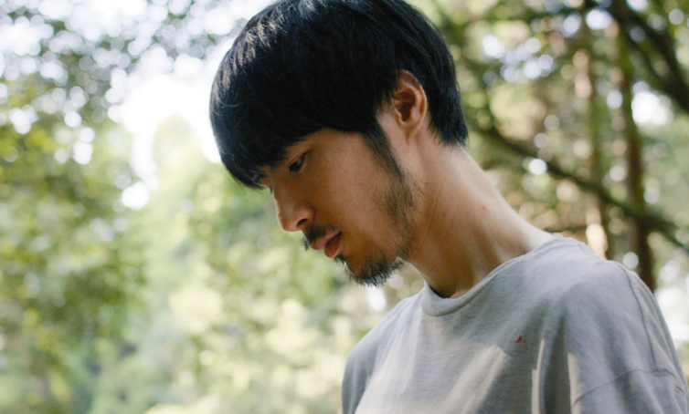
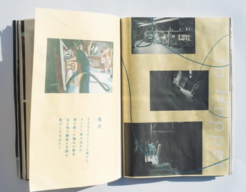
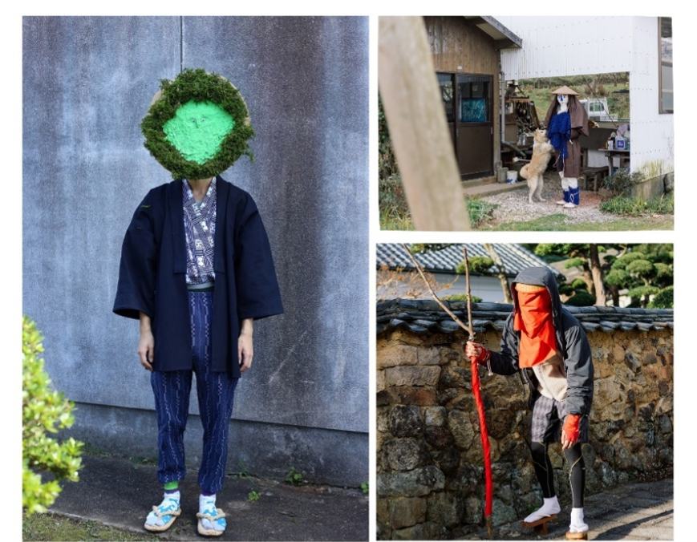

Toshiki Otsuka 大塚 隼輝
九州大学文学部卒。(株)有田まちづくり公社にて、地域創生に10年間従事。現在は生成AIとKJ法の融合による創造的な合意形成の支援を研究している。人文知とテクノロジーの交差点から、人間と機械の共創のあり方を探求する。 After graduating from Kyushu University with a degree in Humanities, I have spent over 10 years in community development at Arita Machizukuri Corporation, while researching AI-augmented creativity and Computer Supported Cooperative Work (CSCW) through the integration of generative AI and abductive reasoning. I explore human–AI co-creation at the intersection of technology and humanistic knowledge.


HypoBoardで作成したJSONファイルを読み込み、地図上にマッピングするツール。KJ法の意味空間と、実座標に紐づく地理空間の接続を可視化する。自治体ワークショップやまちづくり会議での発話を場所に結びつけ、議論から具体的行動への移行を促す。 A tool that reads KJ-method diagram JSON files generated in HypoBoard and maps them onto a geographic map. It visualizes connections between KJ-method meaning space and geographic space tied to real-world coordinates. By linking workshop utterances to places, it supports the shift from discussion to concrete action.

録音データから自動文字起こしを行い、各発話を埋め込みベクトルに変換して時系列グラフ化するツール。複数人会議における議論の発散と収束について、その動態を可視化し、合意形成の支援につなげる。 A tool that automatically transcribes audio recordings, converts each utterance into an embedding vector, and visualizes the results as a time-series graph. It reveals the dynamics of divergence and convergence in multi-person meetings and supports consensus-building.

KJ法のプロセスを半自動化するシステムの改良版。図解化の描画性能と操作性を向上。会話をリアルタイムで文字起こしして画面上にカードとして配置する、ブレインストーミング支援機能も実装。 An improved version of a system that semi-automates the KJ Method process, with enhanced drawing performance and usability for diagramming. It also implements a brainstorming support feature that transcribes conversations in real time and places them on the screen as cards.

KJ法の図解化プロセスをOpenAI APIで半自動化するシステム。質的データの構造化とラベル生成を支援し、人間による検証可能性を保持した設計。電子情報通信学会「合意と共創」研究会にて優秀賞を受賞。 A system that semi-automates the KJ Method diagramming process using the OpenAI API. It assists with structuring qualitative data and generating labels while preserving human verifiability. Awarded Best Paper at the IEICE Technical Committee on Consensus and Co-creation.

自主制作映画（2024年）。監督：厨子翔平、出演：大塚隼輝ほか。地域に根ざした物語を映像化するプロジェクト。 Independent film (2024). Directed by Shohei Zushi, starring Toshiki Otsuka and others. A project bringing locally rooted stories to the screen.

有田焼の原料となる陶石の加工業者を取材し、陶土が出来上がるまでの過程を表現した自主制作冊子（2022年）。詩とAIグラフィックスを担当。壱岐成太郎（写真）、橋本優（デザイン）との共同制作。 A self-published booklet (2022) fusing poetry and AI-generated graphics. Co-created with Seitaro Iki (photography) and Masaru Hashimoto (design).

有田町の地域活性化事業。広告「yosomonシリーズ」の企画・衣装作成・出演を担当（2018–2019年）。まちづくり公社での実務経験に基づくプロジェクト。 A community revitalization project in Arita Town. Planned, produced costumes for, and appeared in the "yosomon" advertising series (2018–2019). Based on hands-on experience at the Machizukuri Corporation.
比較宗教学研究室 ・ 指導教員：關一敏先生、飯嶋秀治先生 Comparative Religion Lab ・ Advisors: Prof. K. Seki, Prof. S. Iijima
卒業論文「仏教修行者の生活と身体 ― 佐賀県基山町の真言宗吉祥寺を事例として」 Thesis: "Life and Body of Buddhist Practitioners: A Case Study of Shingon Kichijō-ji Temple in Kiyama, Saga"
交換留学 Exchange Student
有田町の地域創生・まちづくり事業の企画運営 Planning and managing community development projects in Arita Town
地域活性化プロジェクトの企画・実行 Planning and executing community revitalization projects